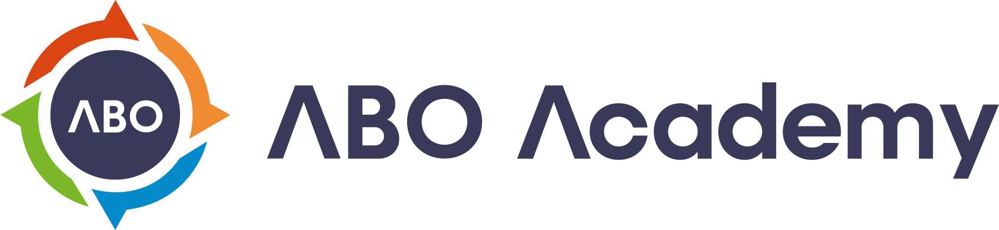
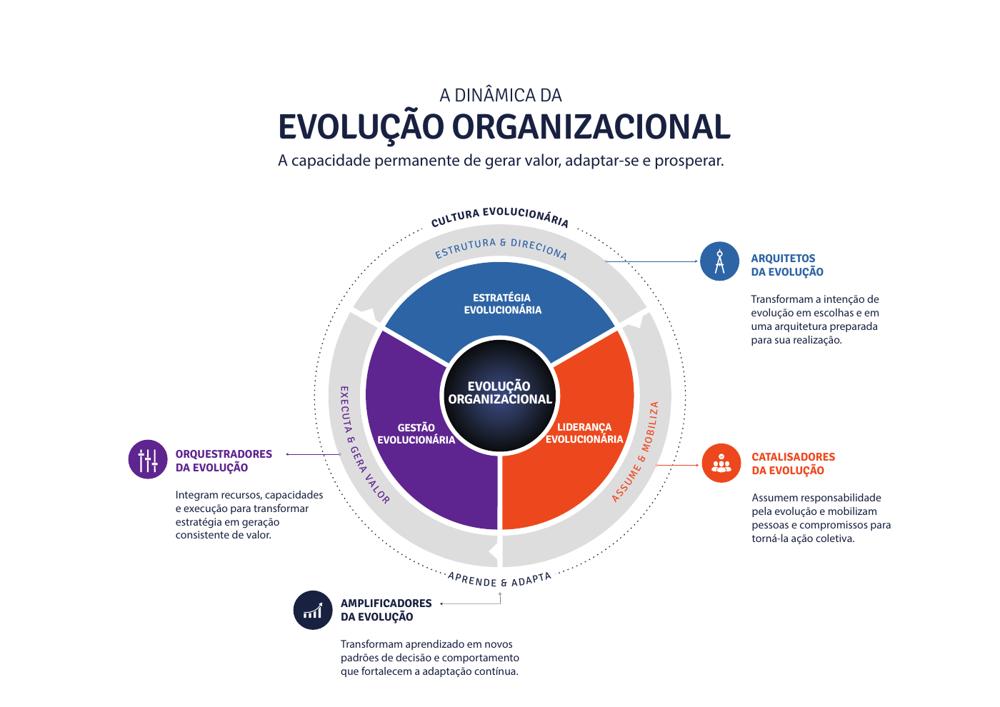
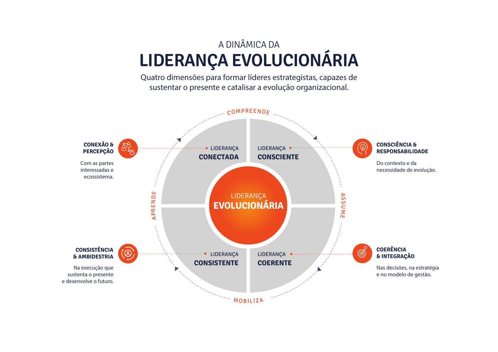
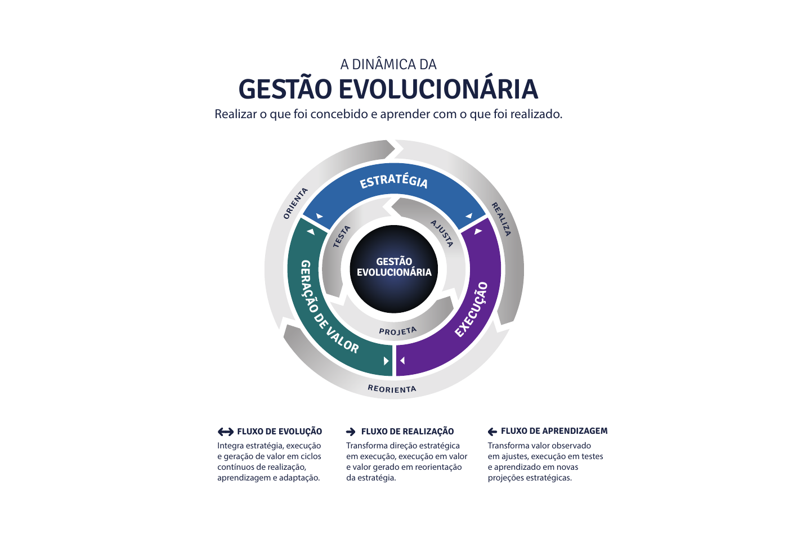

Conceber a estratégia
Transformar a intenção de futuro em uma arquitetura coerente de resultados, capacidades e programas.
ESTRATÉGIA EVOLUCIONÁRIA
Vamos conversarPlanejamento Estratégico Evolucionário
Construa a estratégia da sua organização enquanto desenvolve líderes capazes de concebê-la, assumi-la e prepará-la para a execução.
Construa o próximo ciclo Conheça o PEE ↓Uma estratégia.
Líderes protagonistas.
01 / UMA NOVA CAPACIDADE
O plano é uma entrega.
A capacidade estratégica permanece.
O PEE é um programa executivo de desenvolvimento da capacidade estratégica da liderança, aplicado à construção real da estratégia da organização.
As decisões são construídas por quem conhece o negócio e vai responder por sua evolução. A ABO Academy conduz essa jornada com método, mentoria, coaching executivo e apoio de IA.
Ao longo do processo, a liderança aprende a conectar visão de futuro, capacidades, recursos e escolhas concretas.
Transformar a intenção de futuro em uma arquitetura coerente de resultados, capacidades e programas.
ESTRATÉGIA EVOLUCIONÁRIAPreparar executivos para formular, defender e assumir as escolhas estratégicas da organização.
LIDERANÇA EVOLUCIONÁRIACriar as condições para a passagem à execução, à aprendizagem e à adaptação contínuas.
PASSAGEM PARA A GESTÃO EVOLUCIONÁRIA02 / O SISTEMA POR TRÁS DO MÉTODO
Estratégia + Liderança + GestãoUma estratégia dá direção. A liderança assume e mobiliza. A gestão transforma essa direção em valor. A cultura aprende e adapta — sustentando a evolução da organização.

03 / DA INTENÇÃO À PRONTIDÃO
Uma jornada de aproximadamente três mesesQual futuro queremos construir?
A liderança amplia a leitura do contexto, explora possibilidades e alinha uma intenção estratégica compartilhada.
O que torna esse futuro possível?
O modelo PuRe CaRe conecta propósito, resultados, capacidades e recursos em programas estratégicos.
Estamos preparados para começar?
Os líderes defendem suas propostas, confrontam riscos e consolidam as escolhas em uma estratégia integrada.
Sonhador, Realista e Crítico. Três modos de pensar que a liderança exercita repetidamente ao longo da jornada: imaginar possibilidades, estruturar caminhos e questionar hipóteses.
LIDERANÇA QUE SE DESENVOLVE FAZENDO
Sponsors e líderes de programa desenvolvem visão sistêmica, pensamento crítico e capacidade de articulação enquanto constroem e defendem seus próprios programas.
Assumir a estratégia significa responder por escolhas, conectar áreas e mobilizar compromissos. É assim que o planejamento se torna desenvolvimento executivo.
Explore as quatro dimensões
04 / COMO A TRANSFORMAÇÃO É CONSTRUÍDA
Aprendizagem, decisões e responsabilidade se desenvolvem juntas. Cada mecanismo fortalece a qualidade da estratégia e a capacidade de quem a constrói.
O PuRe CaRe organiza a arquitetura da evolução. O Book de Estratégia registra e conecta as decisões.
Sponsors e líderes desenvolvem suas capacidades ao estruturar e documentar os próprios programas.
Responsabilidade explícita pela evolução das capacidades e pela liderança dos programas estratégicos.
Agentes especializados apoiam a análise de hipóteses, a exploração de alternativas e a elaboração de propostas.
Preparação para comunicar, sustentar e defender cada programa perante os demais executivos.
Devolutivas sobre pensamento estratégico, comunicação, responsabilidade e articulação entre áreas.
A ABO Academy faz a curadoria e a edição da primeira versão do Book, criando uma narrativa integrada e utilizável.

05 / PRONTA PARA O PRÓXIMO MOVIMENTO
O PEE concebe e estrutura a Estratégia Evolucionária. A execução é uma etapa posterior: a Gestão Estratégica Evolucionária (GEE), com ciclos de inspeção, aprendizagem e adaptação.
Essa passagem é preparada desde o desenho da estratégia, com responsabilidades, liderança dos programas e uma perspectiva de governança evolutiva.
O PRÓXIMO CICLO COMEÇA COM UMA CONVERSA
Converse com a ABO Academy sobre o momento do seu negócio,
a participação da liderança e o desenho do programa para sua empresa.